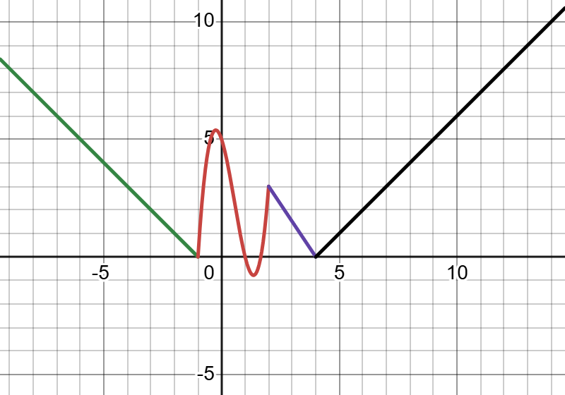
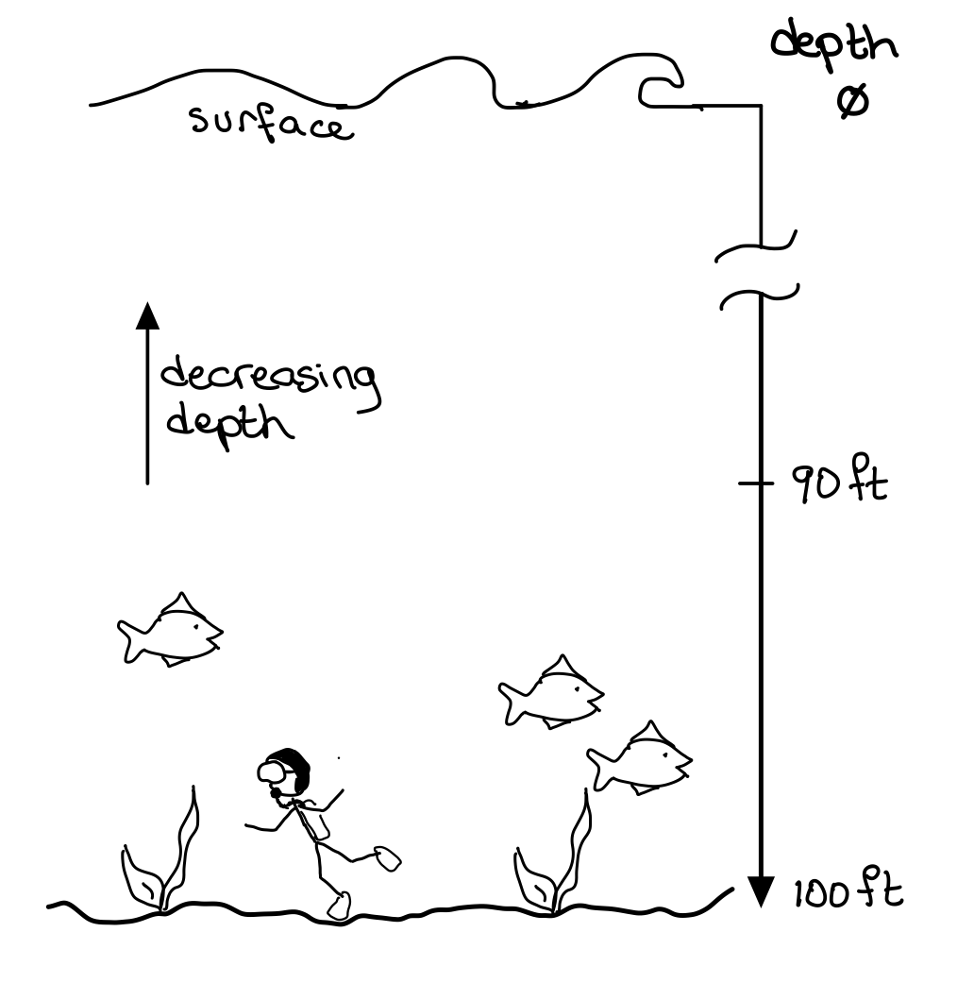
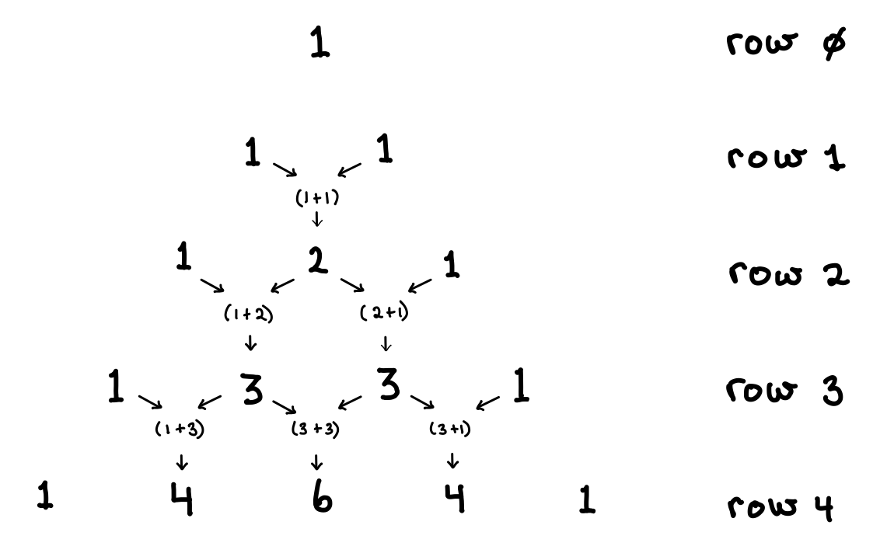

🎯 Final Exam - Winter 2025
Question 1: Errors (3 marks)
Fix the errors.
Part a)
# should print 4, fix code so that it does what it is supposed to.
a = "2"
b = a*2
print(b)Part b)
# should print all the numbers in the list
a = [1, 9, 3, 7, 8, 2, 1]
for number in range(a):
print(number)Part c)
def three():
return 3
# without replacing the word `three` with `3`, fix this so that it prints 18
b = three * 6
print(b)Question 2: Tracing 👣 (6 marks)
a) What is the output when this code is run:
for number in [9, 7, 4, 3, 18]:
if number % 3 == 0:
print(f"{number} is divisible by 3")
else:
if number % 2 == 0:
print(f"{number} is divisible by 2")b) What is the output when this code is run:
for number in [7, 9, 4, 3, 18]:
print(number)
if number > 8:
breakQuestion 3: Length of a list (4 marks)
Without using the len method, or enumerate, find the length of a list
def length(values):
# write your code here
c = [6, 4, 2, 0, ... , 9, 9]
y = length(c)Question 4: Coding piece-wise functions (6 marks)

Consider the following piecewise function
\[ f(x) =\begin{cases} -x-1 & \text{if}\quad x < -1\\ 3x^{3}-5x^{2}-3x+5 & \text{if}\quad -1 \leq x \leq 2\\ 6-\frac{3}{2}x & \text{if}\quad 2 < x < 4 \\ x-4 & \text{if}\quad x \geq 4 \end{cases} \]
Write a Python function named
fthat- takes
xas input parameter and - returns \(f(x)\) according to the above definition.
- takes
Question 5: Target value (6 marks)
Write a function filter_list that
takes as input parameters:
values- a list of integerstarget_value- an integer
returns
- a new list of numbers from
valuesthat are within $$3 units from thetarget_value(inclusive).
- a new list of numbers from
Example (this is an example only, your code must work for any values and target_value):
c = [6, 4, 9, 2, 1]
filtered = filter_list(c, 5)
print(filtered) #output : [6,4,2]Question 6 - Fridays (5 marks)
You are given two lists. Each one has one item for every day of the year.
- The
monthslist shows the month of each day. - The
dayslist shows the day number of each day. - The first date is January 1st which is a Wednesday
months = ['Jan', 'Jan', ..., 'Jan','Feb', 'Feb', ... 'Feb', 'Mar', "Mar", ...]
days = [ 1, 2, ..., 31, 1, 2, ... 28, 1, 2, ...]Example: To print the 53rd day of the year, use:
print(f"{months[52]} {days[52]}")Write Python code that:
- Prints every Friday of the year as
Month Day - If the day is Friday the 13th, print a special message
Sample output:
...
May 23
May 30
Jun 6
Jun 13 WOoOo, Friday the 13th
Jun 20
Jun 27
...Question 7 - Mind Game (7 marks)
Mind Game is an old game where you have to guess the colour arrangement of 4 hidden pegs. But we live in the digital age, so lets create a computer game along the same concept.
- Write a function called
process_guessthat:- Takes in two lists as parameters:
secret: a list of 4 hidden integersguess: a list of 4 integers the user tries to guess.
- Returns a list called
clues, also with 4 integers.
- Takes in two lists as parameters:
- For each number in the guess:
- If it’s correct and in the right spot, the clue is
1 - If it’s in the secret but in the wrong spot, the clue is
2 - If it’s not in the secret at all, the clue is
4
- If it’s correct and in the right spot, the clue is
Example
ASSUME THERE ARE NO DUPLICATES NUMBERS IN THE SECRET AND GUESS
If the secret is: [4, 6, 1, 8]
and the guess is [1, 5, 7, 8]
the clue will be [2, 4, 4, 1]
2because the 1st guessed number1is in the secret list4because the 2nd guessed number5is not in the secret list4because the 3rd guessed number7is not in the secret list1because the 4th guessed number8is in the secret list, and in the correct spot
Question 8: Solar Panels ☀️🔋(6 marks)
Sarah is considering installing solar panels on her home to save on electricity bills. She would like to use a program to help her predict how many years it will take to recover the cost of the installation.
Write a python program that:
per year (Note when printing, year counting should start at 1)
- calculate and print:
- the savings on electricity
- the amount of electricity produced by the solar panel (
output) multiplied by the price of electricity (electricity)
- the amount of electricity produced by the solar panel (
- the cumulative savings
- adjust the price of electricity due to
inflation
- the savings on electricity
- stop printing this info once the cumulative savings exceed the price of the initial cost of the solar panels (
installation)
- calculate and print:
print the total number of years it took to recoup the installation price.
Example:
Assuming we start with these values (which may not be the correct numbers)
output = 800 # the amount of electricity produced by the solar panels in KWh
installation = 12000 # the cost of installing the solar panels (install_cost) in $
electricity = 0.80 # the estimated cost of electricity $/kWh
inflation = 5 # the percentage increase in electricity prices per year in %The output would be:
Year: 1, Savings: 640.00, Cumulative: 640.00
Year: 2, Savings: 672.00, Cumulative: 1312.00
Year: 3, Savings: 705.60, Cumulative: 2017.60
...
Year: 14, Savings: 1206.82, Cumulative: 12543.12
In year 14 you have recouped your lossesQuestion 9: Scuba Diving (6 marks)
You are on the bottom of the sea. See below:

You need to escape quickly, but if you ascend too fast you will get the bends (a bad thing).
Your friend has sent down instructions on where you should be at every minute of your ascent.
This is a good plan only if the following conditions are met:
- the depth is decreasing (going towards the surface) at every step
- the difference in depth between every step of your journey to safety is less than or equal to 30 feet
Write a python function is_good that
- takes in as parameter:
- a sequence of
depths(list of numbers)
- a sequence of
- sets your initial depth is 100 feet
- returns
Trueif it’s safe,Falseotherwise.
Examples
[50, 30, 20, 0]: Bad in the first minute you have gone from 100 feet to 50 feet, which is too fast (a difference of 50 feet in one minute).[80, 90, 70, 30, 0]: Bad you go up to 80 feet, but then go back down to 90 feet. You cannot go back down.[80, 60, 30, 20, 10, 0]: Good you keep going up, you never go more than 30 feet in one minute.
Question 10: Time is running out ⏰ (5 marks)
Write a function that simulates a countdown timer.
When the function is called, it displays every second starting from 01:0:0 (1 hour, 0 minutes, 0 seconds) to 0:0:0 and then stops. There is no input required from the user.
Example:
1:0:0
0:59:59
0:59:58
. . .
0:1:0
0:0:59
0:0:58
. . .
0:0:2
0:0:1
0:0:0
💥 BOOM 💥Question 11 - Pascal’s Triangle (6 marks)
Pascal’s triangle is a simple method to determine the coefficients of the expanded math formula (a+b)**n

Each row of Pascal’s triangle is determined by using the previous row in the following manner…
- the new row starts with 1
- each preceding element of the row is the sum of the previous row’s diagonal elements.
- the new row’s last element is a 1
Code a function next_pascal(row: list) -> list that
- takes a row of Pascal’s triangle as a parameter and
- returns the next row in the triangle in a list.
Example:
row = [1,4,6,4,1]
new_row = next_pascal(row)
print(new_row) # [1,5,10,10,5,1]Write a python program that
- takes
nas input (ask the user) the height of the pascal triangle (row number) and - prints the pascal triangle.
- NOTE: Use your function
next_pascal
Example output for n = 5
[1]
[1, 1]
[1, 2, 1]
[1, 3, 3, 1]
[1, 4, 6, 4, 1]
[1, 5, 10, 10, 5, 1]